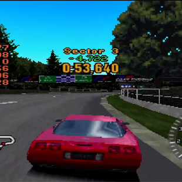

Predicting What's New on the Nostalgia Horizon - The PS1 Era
Ben Yatzhee Croshaw
20 September 2016 6:00 pm
Whoops, been a while since the last column, hasn't it; I've been rather occupied with moving from one sovereign nation to a different sovereign nation, but you may have noticed this column stopped being weekly quite some time ago, and that's mainly because frankly I can't always think of anything to talk about. Oh, how I miss the days when there were enough hours in the week to reliably type up some thoughts, and that rather underhandedly gets us onto the topic of nostalgia.
Nostalgia has always been an interesting phenomenon, partly because there's something predictable about it. I'm talking about something I've referenced before: the twenty-to-twenty-five year rule. Modern culture is always nostalgic for the period approximately twenty to twenty-five years prior to the present day. Because the most influential creators of culture are usually in their 30s, and most people are nostalgic for the things they had and experienced around the age of 12, emotionally mature enough to appreciate things and gain a sense of personal identity from those things, but not old enough to be cynical or embarrassed about it.
Exactly twenty years ago was 1996, which was the year Quake came out. Quake of course marking an era when the PC shooter was king. And now, twenty years on, the biggest release of the year is Deum, a callback to old timey fast-paced fun shooters somewhat laughably hailed as something new and refreshing.
Not that culture is always as obviously and cleanly inspired by whatever culture was going on twenty years prior. I don't remember anything that might explain the glut of slow, ploddy, cover-based shooters we recently escaped from. I don't remember a time twenty years before Gears of War came out when we all gained fifty pounds from eating hash cookies. Rather, I think the nostalgic callback is something that tends to come into prominence when all else fails. The ploddy cover shooters and the modern war shooters wore out their welcome some time ago and sandbox games may not be far behind; something needed to rise to fill the gap. Deum successfully did that because its nostalgic quality made it a safe bet.
But if its success heralds a glut of shooters harking back to PC gaming in the mid-90s then fatigue for such things will inevitably grow, and a new trend will arise. Bearing that in mind, perhaps it would be worth examining gaming history and trying to make predictions based on the twenty year rule. Fun as the likes of Doom and Quake were, this was also the era that planted the seeds of that PC Master Race I inadvertently christened. With the introduction of 3D acceleration requiring bigger and better hardware, and the rise of online multiplayer turning PC shooters into something highly competitive and skill-focused, a sense of elitism naturally followed.
Those that were driven away by that elitism were welcomed by the console market. You see, at around this same time, the Playstation 1 came out, the console that broke new ground by successfully marketing itself not to children or to dweebs but to the streetwise cool kids, leading to the increasing mainstreamisation (if that is a real word) of console gaming, for better or worse, and paving the way for the PS2 to be the most popular console in history. So I would argue that this was the next major 'phase'of gaming after the Quake era and the PC shooter dominance.
With that in mind, is anything going on now that reflects nostalgia for the Playstation 1, and for that particular brand of dodgy 32-bit first generation 3D graphics where the textures used to wobble all over the place like you'd drunk an entire bottle of soy sauce before playing? Yes, I think there is. The game that leaps to my mind is Devil Daggers on Steam, a bit of a microgame that I found while looking for new shooters, and which is deliberately presented in a very retro 32-bit 3D, complete with dodgy textures, low resolution and models that look like they're made of wobbling jelly. It's effectively used to create an eerie, hellish atmosphere, just as early 3D helped give the surreal, dreamlike air to games like Quake and Silent Hill 1.
Besides that, the PS1 overindulged a wee bit on cartoony 3D platformers, with one of the earliest and most noteworthy being Crash Bandicoot. Just last year the developer of same released Uncharted 4, which included a section where we had to play a bit of Crash Bandicoot. But that didn't really count as being 'inspired' by nostalgia; it was more a carved out and copy pasted bit of nostalgia for the sake of a player-developer mutual masturbation session. Speaking of which, there was also the recent Ratchet and Clank remake, but the original came out in 2002, so that's a few years premature for the twenty year rule. Which might explain why the remake was a load of old shit.
So what else rose to particular prominence around the Playstation between 1996 and 2000, when the PS2 took up the reins? Well, there was also the invention of survival horror (or rather, the coining of the term 'survival horror' because the first true survival horror would have been either Alone in the Dark, Clock Tower or The Uninvited and frankly they can fight it out amongst themselves) with Resident Evil and Silent Hill. Before Resident Evil 4 shifted the focus more onto the action than the sense of vulnerability and creeping dread. And what are we seeing now? Resident Evil VII apparently going back to the vulnerability bit.
That might be a bit of a stretch, so I'm doing what I always do when I'm stuck with a weak ending to a column and throwing it out to the comments. What signs are we seeing today that might indicate nostalgia for 32 bit graphics and the PS1 era? What will be the next nostalgic trends in gaming, bearing in mind the twenty year rule? Please answer promptly before the patent office closes.
Back to articles